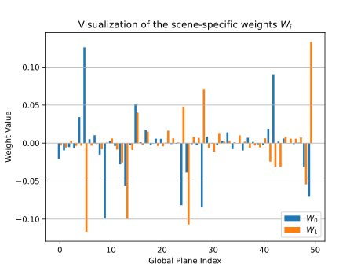

We provide below 1000 additional videos demonstrating our method's performance in large-scale settings.
Note: The videos might take a few seconds to load.
Analysis of base planes
Visualization of rendered base planes
We provide below videos showing the learned base planes for different scenes.
TODO add analysis from rebuttal.
Base planes weights values for two objects
We illustrate below the learned weights for the base planes corresponding to two different objects.

The weights above correspond to the following two cars:
Interpolating between two weights
We also provide the following animations illustrating base planes interpolated between different scenes.